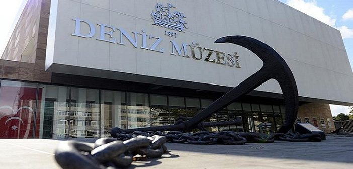

İstanbul Deniz Müzesi
AçıklamaTürkiye'nin denizcilik alanının en büyük müzesi olan Deniz Müzesi, içerdiği koleksiyon çeşitliliği açısından dünyanın sayılı müzeleri arasında yer alıyor. 125 yıldır zengin koleksiyonu ziyaretçileriyle buluşturan Deniz Müzesi, Türk denizcilik tarihini ziyaretçilere anlatmaya devam ediyor. Deniz Müzesi, Preveze Deniz Zaferi’nin kazanılmasında önemli rol oynayan Kaptan-ı Derya Barbaros Paşa’nın türbesinin ve anıtının hemen yanında yer alıyor. Müze ile ilgili bilgi veren Şube Müdürü Yarbay Gökhan Atmaca, “1897 yılında Kasımpaşa’da kurulan müzenin çekirdek koleksiyonu Binbaşı Süleyman Nutki tarafından oluşturuldu. İlk çekirdek koleksiyonda ise gemi parçaları ve silahlar yer alıyor.” dedi. Yarbay Atmaca, “1948 yılında Dolmabahçe Camii içerisinde kısa bir dönem bulunan müze, 1961 yılında Nuri Demirağ Uçak Fabrikası ve Barbaros Hayrettin’in vakfiyesinin ve eski maliye binasının da içinde olduğu araziye taşınıyor.” diyerek müzenin 125 yıla yaklaşan öyküsünün son 50 yıldır Beşiktaş’ta devam ettiğini belirtti. 2013 yılından beri yeni yapılan akıllı binasında ziyaret edilen müzenin koleksiyonundan bahseden Yarbay Atmaca, “Tarihi kayıklar koleksiyonu, gemi parçaları, tarihi silahlar, sancaklar, tekstil eserler, cam ve taş eserler ve ahşap eserler yer alıyor. Müzede 23 binden fazla eser bulunurken; bu eserlerin yüzde 10’u sergileniyor.” diyerek Deniz Müzesi’nin çeşitlilik anlamında dünyanın en zengin askeri müzeleri içerisinde yer aldığını ifade etti. Müzenin girişinde ve üst katında Türk denizcilik tarihinin önemli kişilerinin büstleri; Mustafa Kemal Atatürk'ün Savarona Yatı'na ait filikası ve kullandığı sandallar; saltanat kayıkları, gemilerde kullanılan armalar yer alıyor. İkinci katta bulunan bağlantı yoluyla Osmanlı ve Türkiye Cumhuriyeti Dönemi Donanması’na ait eserlerin sergilendiği alana geçiş yaptıktan sonra ziyaretçilerin ilgisini çeken başka bir alanda ise dalgıçlık tarihine yönelik hazırlanmış koleksiyon bulunuyor. Müzede, Deniz Tarihi Gelecek Kuşaklara Aktarılıyor Müzeyi gezerken dünyada pek çok ülkenin tarihinden belki de daha eski eserlerin görülebileceğini ifade eden Yarbay Atmaca, “19. yüzyıl saltanat kayıklarını inceleyerek Sultanların boğaz transferlerinde nasıl intikal ettiklerini; Ulu Önder Mustafa Kemal Atatürk’ün kullandığı kayıkları incelerken ise piyade orjinli bir subay olmasına rağmen denizciye ve denizciliğe verdiği önemi gözlemleyebilirsiniz. Müzenin diğer kısmında sergilenen Osmanlı ve Cumhuriyet Dönemi Donanması’nın unsurlarına bakınca da geçmişten bugüne kadar Deniz Kuvvetleri envanterinin nasıl gelişim gösterdiğini somut olarak algılayabilirsiniz.” dedi. Deniz Müzesi’nin ana fonksiyonunun deniz tarihini gelecek kuşaklara aktarmak olduğunu ifade eden Yarbay Atmaca, “Müzenin yanı sıra Deniz Kuvvetleri’nin mirası olan yaklaşık son 200 yıllık evrak da bizim sorumluluğumuzda. Arşivimiz yaklaşık olarak 25 bin klasörden oluşan tahmini olarak da 3-3 buçuk milyon belgeyi içeriyor. Deniz tarihi ve donanma konusunda çalışmak isteyen kişilere ve araştırmacılara açık bir arşiv. Kütüphanemizde şu an 21 binden fazla kitap var. Deniz İhtisas Kütüphanesi, arşivin yan birimi olarak destek veriyor.” diyerek araştırmacıların arşivden faydalandığı gibi kütüphaneden de faydalanabildiğini söyledi. Deniz Müzesi’nin hemen yanında Mimar Sinan’ın yaptığı Barbaros Hayrettin Paşa Türbesi yer alıyor. Yarbay Atmaca, Türk Donanması’nın Karadeniz’e çıkarken Barbaros Hayrettin Paşa’nın manevi şahsını onurlandırmak için güverteye çıkarak selamladığını belirtti. Denizcilikle ilgilenen toplumların en önemli gösterim alanlarının deniz müzeleri olduğunu söyleyen Yarbay Atmaca, “Denizcilikle ilgili birikiminiz, anlatacağınız bir şey varsa; bunu gelecek kuşaklara ya da yurt dışından gelen ziyaretçilere aktarabileceğiniz en iyi yer müzedir. Herkesi özellikle de gençleri müzemize bekliyoruz. Burada yaşayacakları iki saatlik serüvenin onları çıkışta farklı duygu ve düşüncelerle buluşturacağını düşünüyoruz.” diyerek müzenin öğrencilere ücretsiz olduğunu ekledi.
|
|
Yaz Dönemi Açılış Saati: 09:00 Kapanış Saati: 17:00 |
Hafta Sonu Açılış Saati: 10:00 Kapanış Saati: 18:00 |
|
Hediyelik Eşya Reyonu Pazartesi ve Salı günleri dışında hergün 09:00-12:30 ve 13:30-17:00 saatleri arasında açıktır. |
Adres: Sinanpaşa, Beşiktaş Cd. No:6 D:1, 34353 Beşiktaş/İstanbul Telefon: (0212) 327 43 46 |
|
Kapalı Günler Pazartesi |
Yetişkin Giriş Ücreti: 12 TL Öğrenci Giriş Ücreti: ÜCRETSİZ |